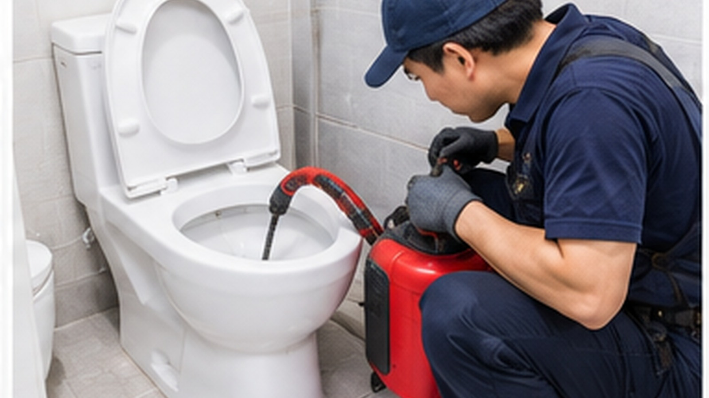

서울 영등포구 문래동 현장에서 해당 항목이 나타나는지 먼저 확인합니다.
DRAIN · LOCAL SERVICE
서울 영등포구 문래동
서울 영등포구 문래동
변기막힘
서울 영등포구 문래동의 건물 형태와 사용 환경에 따라 변기막힘 확인 항목은 달라질 수 있어 현장 상태를 기준으로 살펴보는 것이 좋습니다.

01 · OVERVIEW
서울 영등포구 문래동에서
서울 영등포구 문래동에서
먼저 확인할 내용
변기 막힘은 이물질뿐 아니라 배수관 내부 상태와 반복적인 배수 불량 등 원인이 다를 수 있어 물이 내려가는 모습을 먼저 확인합니다.
서울 영등포구 문래동 현장에서 해당 항목이 나타나는지 먼저 확인합니다.
서울 영등포구 문래동 현장에서 해당 항목이 나타나는지 먼저 확인합니다.
02 · CHECK PROCESS
변기막힘 확인 흐름
- 01변기 수위와 배수 반응 확인
서울 영등포구 문래동의 실제 상태를 기준으로 필요한 범위를 순서대로 확인합니다.
- 02이물질·배관 가능 구간 점검
서울 영등포구 문래동의 실제 상태를 기준으로 필요한 범위를 순서대로 확인합니다.
- 03막힘 위치와 처리 방법 구분
서울 영등포구 문래동의 실제 상태를 기준으로 필요한 범위를 순서대로 확인합니다.
03 · LOCAL POINT
서울 영등포구 문래동 현장 환경도
서울 영등포구 문래동 현장 환경도
함께 살펴봅니다.
같은 변기막힘 문제라도 아파트, 빌라, 단독주택, 상가 등 건물 형태와 설비 배치에 따라 확인해야 할 부분이 달라질 수 있습니다. 따라서 서울 영등포구 문래동에서도 증상 발생 위치와 사용 환경을 함께 확인해 필요한 범위를 구분하는 과정이 중요합니다.
04 · FAQ
변기막힘 자주 확인하는 내용
물이 조금씩 내려가면 막힌 건가요?
정상보다 배수 시간이 길다면 부분 막힘 가능성이 있어 반복되는지 확인하는 것이 좋습니다.
여러 번 물을 내리면 해결될까요?
수위가 계속 올라가는 상태에서는 추가 사용으로 넘침이 생길 수 있어 상태 확인이 우선입니다.
변기가 자주 막히는 이유는 무엇인가요?
사용 습관뿐 아니라 배관 구조나 내부 상태 등도 영향을 줄 수 있습니다.
AREA DIRECTORY
상위 지역으로 돌아가기 →